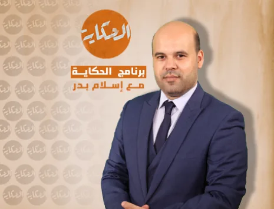
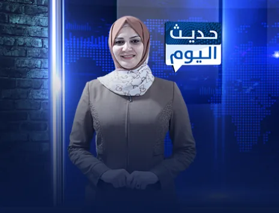
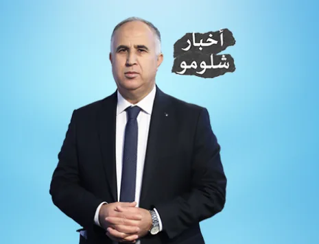
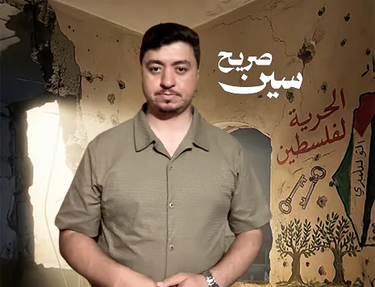
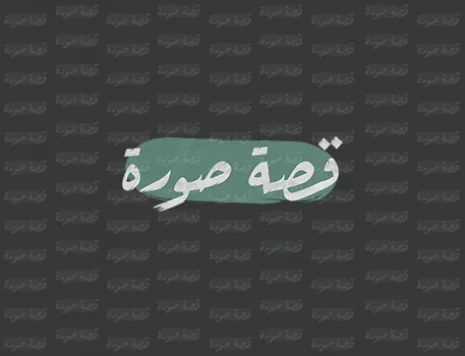

شورتس شهاب
1
/
8
0:08
الحكاية
لماذا تعثّرت «خطة الجنرالات» قبل أن تبدأ؟
اليوم · 09:40 م · شهاب

12.4 ألف
318
الصوت
مشاركة
الخبر
0:07
حديث اليوم
المعابر: ما الذي يدخل فعلًا، وما الذي يُمنع؟
اليوم · 07:00 م · شهاب

8.9 ألف
142
الصوت
مشاركة
الخبر
0:08
عاجل
لحظة إطلاق النار على شاب أعزل في قلنديا
اليوم · 09:56 م · شهاب
31 ألف
904
الصوت
مشاركة
الخبر
0:06
أخبار شلومو
الإعلام العبري بعد الكمين: لغة جديدة للهزيمة
أمس · 09:40 م · شهاب

6.7 ألف
88
الصوت
مشاركة
الخبر
0:10
سين صريح
سؤال واحد للمتحدث: أين ذهبت المساعدات؟
أمس · 08:30 م · شهاب

15.2 ألف
421
الصوت
مشاركة
الخبر
0:07
ميدان
الأسير المحرر عبد السلام أبو الهيجا أمام قبر والدته
اليوم · 08:51 م · شهاب
22.8 ألف
610
الصوت
مشاركة
الخبر
0:09
قصة صورة
حكاية اللقطة: الطفل الذي حمل العلم في رفح
أمس · 06:15 م · شهاب

9.3 ألف
205
الصوت
مشاركة
الخبر
0:05
ميدان
من اقتحام محيط الجامعة الأمريكية بجنين
اليوم · 08:12 م · شهاب
4.1 ألف
57
الصوت
مشاركة
الخبر
اسحب لأعلى للمقطع التالي